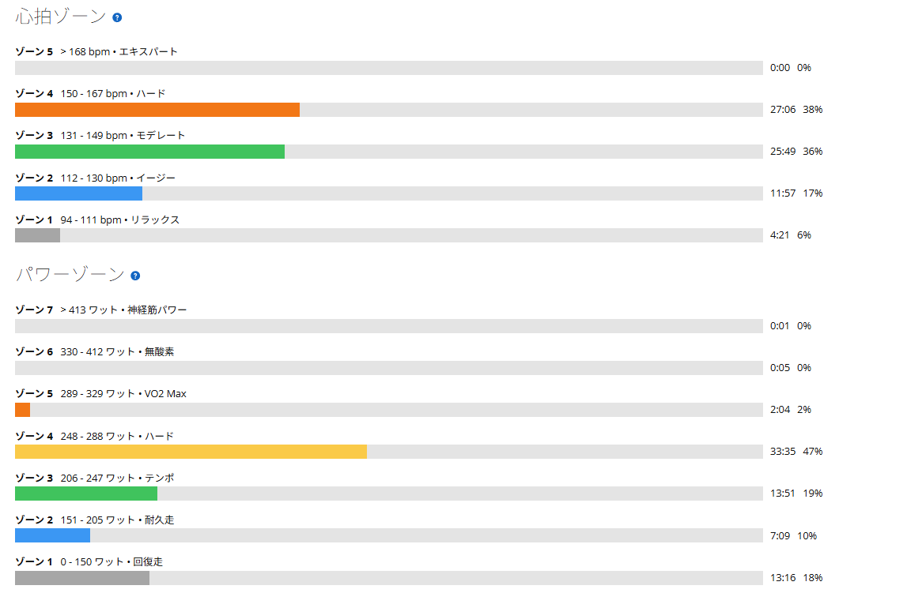

SSTは始める前がいちばん重い。259Wと254Wで揃った日
今日はローラーでSST25分×2。最近の外乗りの練習は「今日も楽しみんごねぇ」となるのだが、今日は正直テンションが上がらなかった。私にとってSSTは結構きつい。高強度インターバルのような派手さはないのに、25分を2本、ずっと一定の出力で踏み続ける必要がある。始める前からその長さが分かっているぶん、気が重い。
ところが実際に乗り始めると、これが楽しくなる。毎回これが不思議だ。結果は1本目259W、2本目254W。5W差で揃えられた。

38.44km・NP239W・TSS87.5
- 全体38.44km / 1時間10分04秒 / 運動負荷179
- 負荷平均223W / NP239W / IF0.869 / TSS87.5 / 最大434W / 20分最大261W
- 心拍・回転平均140bpm / 最大162bpm / 平均85rpm
- 環境平均27.3℃ / 最高28.0℃ / 推定発汗1,129ml
- 効果有酸素TE3.8 / 無酸素TE0.0
メニューはウォームアップ10分、SST25分、レスト5分、SST25分、クールダウン5分で合計1時間10分。パワーゾーンはゾーン4が33分35秒、ゾーン3が13分51秒、ゾーン5が2分04秒だった。SSTとして狙っている帯域に、かなり長く滞在できている。

1本目はケイデンスを落として259W
- 1本目25分01秒 / 259W / 心拍145〜159bpm / 86rpm
今日のテーマのひとつがケイデンスだった。最近は実走でも70台後半から80rpm前後で力をうまく伝える感覚が出てきたので、ローラーでも少し落として乗ってみた。結果としてはかなり良いパワーになった。
今の自分は、ケイデンスをただ高く保つより「少し落として、トルクをうまく乗せる」方が出力を作りやすい場面がある。ただ、まだ完全にコントロールできているわけではない。ケイデンスを落とす、パワーが上がる、今度は上がりすぎる、少し回転を戻す。この調整がまだ難しい。それでも以前よりは「ケイデンスを変えることでパワーを調整する」という感覚が出てきた。
2本目は254W。落ちたというより揃った
- 2本目25分01秒 / 254W / 心拍151〜162bpm / 83rpm
1本目より5W低く、心拍は逆に6bpm高い。これは普通に疲労が積み上がっている。それでも254Wを25分維持できた。
終わった直後は「2本目ちょっと落ちたな」という印象だったが、数字で見ると259Wと254W。この差なら失速したというより「2本ともほぼ同じ強度でまとめられた」と考えた方が近い。しかも今回は、前日に唐沢で60秒ON／30秒OFFを2セットやっている。その翌日にこれを揃えられたのは、なかなか良い材料だと思う。
SSTは始める前がいちばんきつい
今日ちょっと面白かったのは気分の変化だった。乗る前は「今日はSSTか……」という感じである。最近は60/30やゴルビーのような高強度メニューでも、乗る前から結構楽しみになっている。でもSST、お前は別だ。
25分を2本。逃げ場がない。高強度インターバルなら「あと60秒」と区切れるが、SSTは25分。これが私には地味に重い。ところが一度始まると、不思議と楽しい。パワーを合わせる、ケイデンスを調整する、呼吸を見る、少し高ければ戻す、低ければギアか回転を変える。始まってしまえばやることが多い。最近「練習がゲームみたいになってきた」と書いたが、SSTも結局同じだった。スタートボタンを押すまでが、いちばん重い。
ケイデンスも「使い分ける」練習にする
少し前までは「高いケイデンスで回した方がいいのか、低い方がいいのか」という二択で考えがちだった。最近は少し変わってきて、必要なのは「どちらが正解か」ではなく「状況に応じて使い分けられるか」なのかもしれないと思っている。
今日は1本目が平均86rpm、2本目が83rpm。大きく違うわけではないが、少し低めでもパワーを作る感覚は出てきた。今後はケイデンスを下げても力まない、上げてもバタつかない、パワーが上がりすぎたら回転で調整する、疲れてもフォームを崩さない。このあたりをSSTの中でも練習していきたい。SSTを単なる「250Wを50分踏む日」にするより、「一定出力を自分でコントロールする日」として考えた方が面白い。
今日やってみて思ったこと
SST25分×2で259Wと254W。2本目は少し落ちたが差は5W。ノルマは十分クリアだと思う。むしろ前日の60/30の翌日にここまで揃えられたことの方が良かった。
そして今日の新しいテーマはケイデンスだった。低めにしてパワーを出す。でも上げすぎない。必要なら回転を戻す。まだうまくできないが、だからこそ練習になる。今までは「SSTを完遂できるか」が課題だったのが、少しずつ「どうやってきれいに揃えるか」へ変わってきている。乗る前はテンションが上がらなかったのに、始めたら結局楽しかった。次も多分、乗る前は同じことを思う。そしてまた始めたら楽しくなるんだと思う。
次に見るポイント
- 出力の揃え方250〜255W付近で2本をさらに揃えられるか。1本目を上げすぎずに入れるか
- ケイデンスパワーと合わせて意図的に調整できるか。低めでも上半身を力ませないか
- 2本目心拍が上がっても出力を維持できるか
- 連日の負荷前日の高強度と組み合わせてもSSTを再現できるか